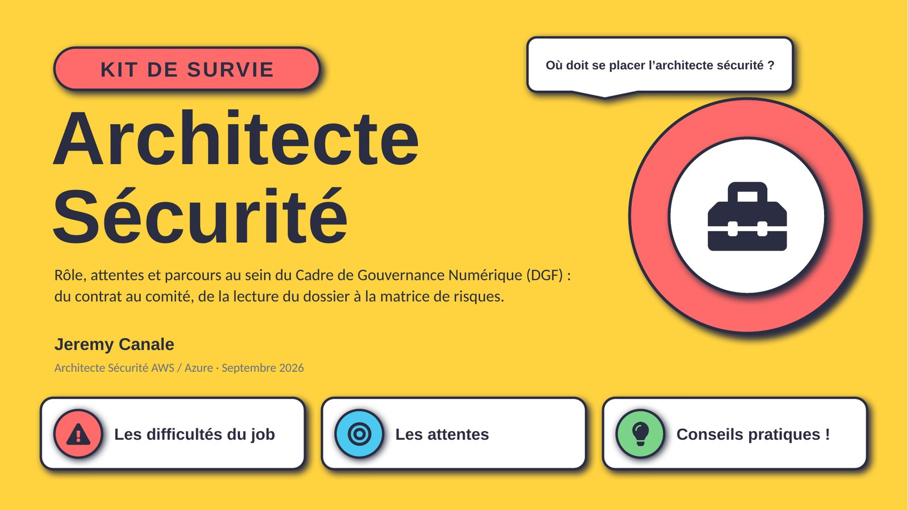
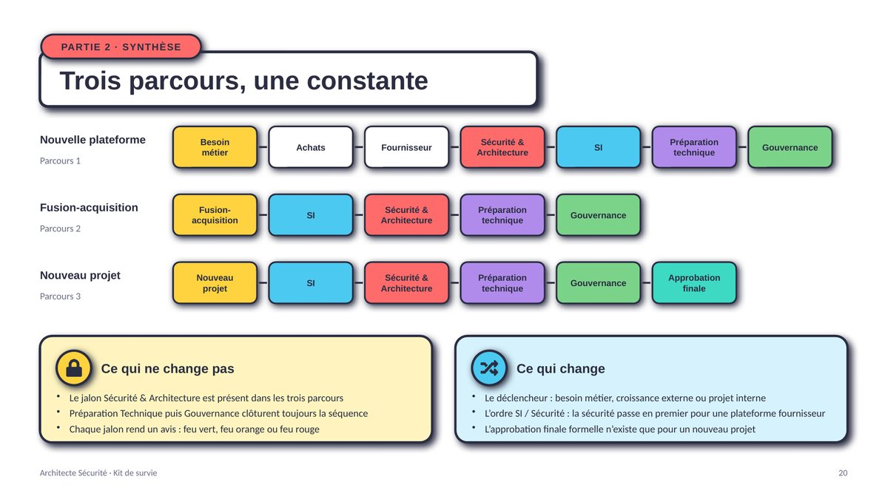
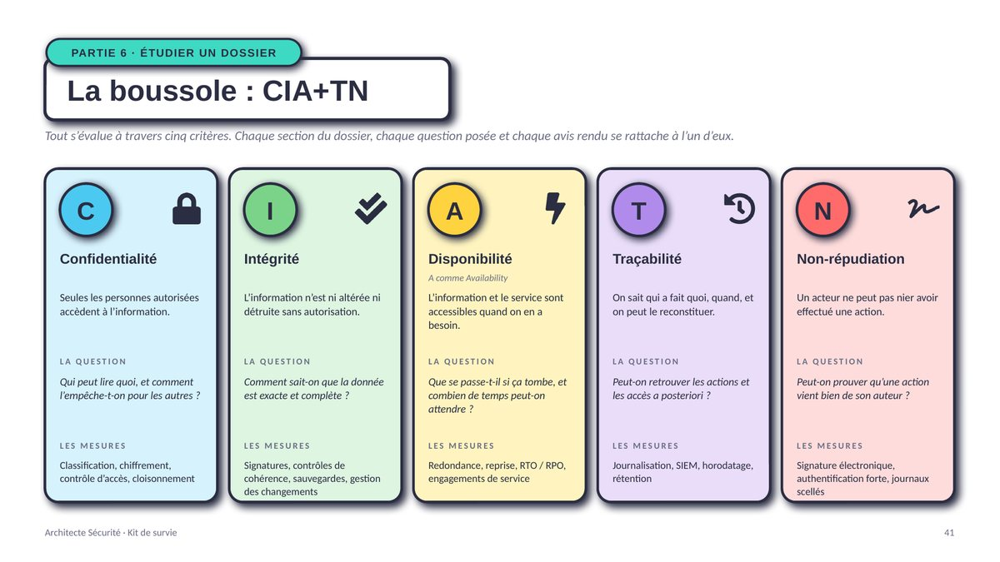
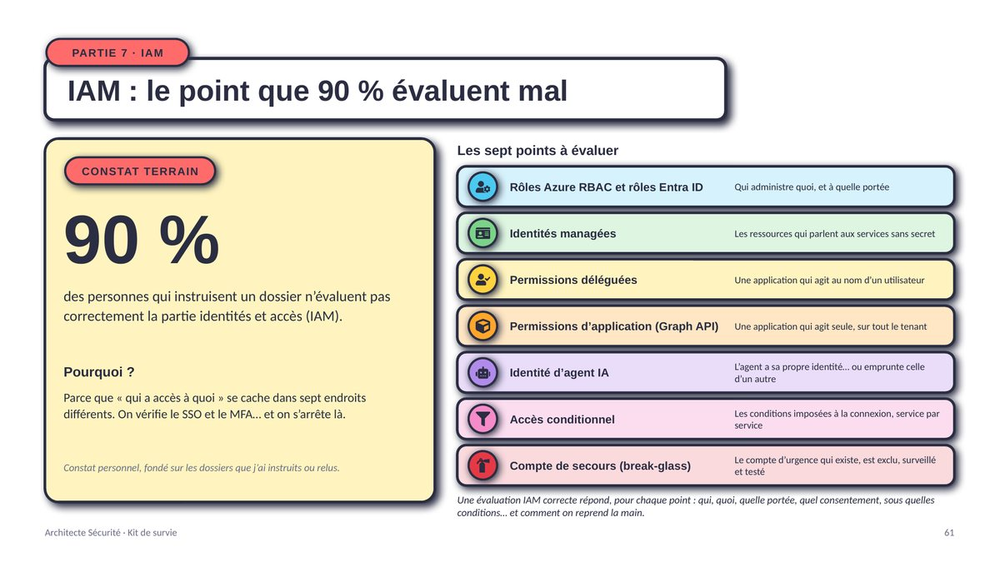
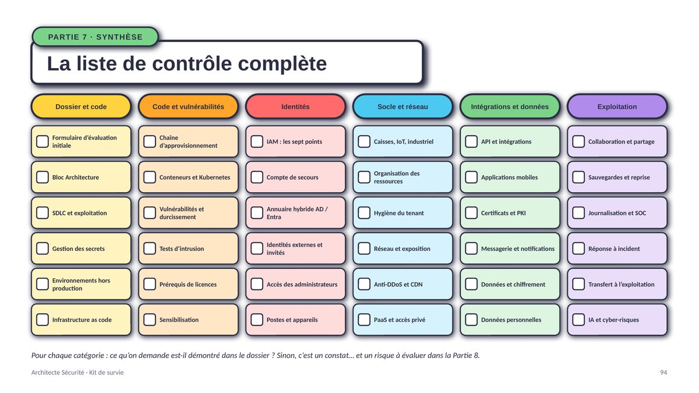
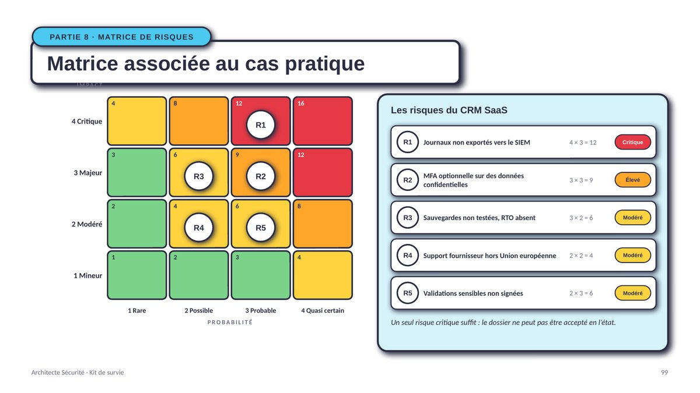
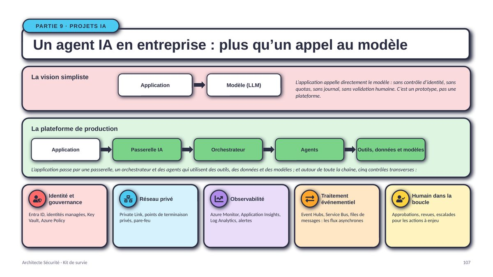
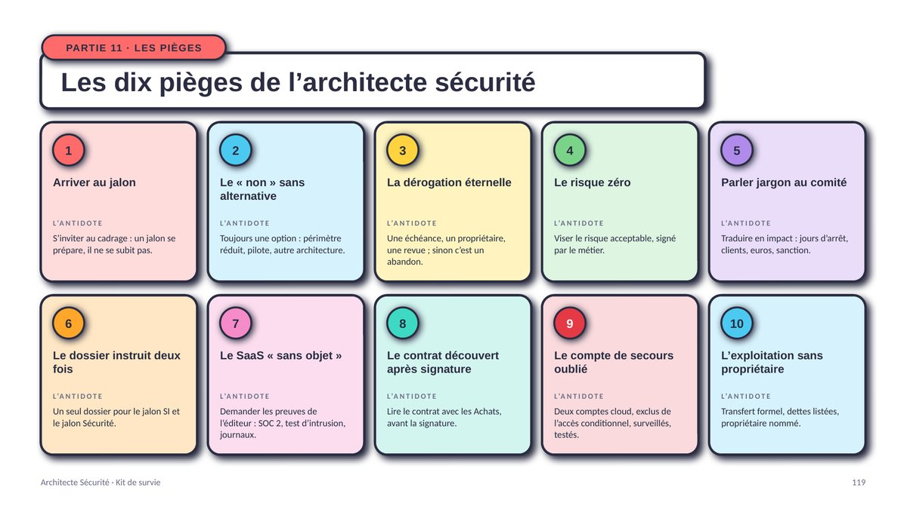

Dirigeant
10 minutes- Constat : un vrai DGF reste rare
- Les jalons du DGF
- Le métier, propriétaire du risque
- Les quatre statuts d'un dossier
- Les dix pièges
- Mettre en place un DGF en 90 jours
Rôle, attentes et parcours au sein du Cadre de Gouvernance Numérique (DGF) : du contrat au comité, de la lecture du dossier à la matrice de risques.
Gratuit, sans inscription. Le lien ouvre ou enregistre directement le PDF.

Les entreprises ne comprennent pas toujours où l'architecte sécurité doit se placer : trop tôt, trop tard, ou en dehors du processus. Convoqué au jalon quand le contrat est déjà signé, il découvre les exigences au lieu de les confirmer. Sollicité sans criticité ni RTO exprimés par le métier, il invente des exigences, et se trompe.
Ce kit donne des repères concrets pour se positionner au bon endroit, au bon moment, notamment dans le Cadre de Gouvernance Numérique (DGF) : la succession de jalons qui encadre toute évolution significative du système d'information, de l'achat d'une plateforme SaaS à l'intégration d'une entité acquise.
Il est écrit depuis le terrain : plus de dix ans d'architecture sécurité AWS et Azure, en grandes entreprises, dans la finance, la banque, l'assurance, la défense, la pharmacie et la distribution, en France, en Belgique, en Suisse et au Moyen-Orient.
des entreprises ont un vrai DGF en place, avec une application dédiée pour suivre le cycle de vie d'un projet. Pour les autres, les jalons vivent dans les courriels et les tableurs.
Constat personnel, fondé sur les organisations accompagnées : pas une étude formelle.des personnes qui instruisent un dossier n'évaluent pas correctement la partie identités et accès (IAM). On vérifie le SSO et le MFA, et on s'arrête là.
Constat personnel, fondé sur les dossiers instruits ou relus.Un jalon se prépare, il ne se subit pas. Impliquer la sécurité dès le besoin métier coûte une heure de cadrage ; la découvrir au jalon coûte des semaines de renégociation.
Le document est conçu pour être parcouru en dix minutes ou lu intégralement. Chaque profil a son chemin.
Sept idées qui structurent le kit, illustrées par les slides correspondantes. Cliquez sur une image pour l'agrandir.

Nouvelle plateforme, fusion-acquisition ou nouveau projet : le déclencheur change, l'ordre des jalons change, mais le jalon Sécurité & Architecture est toujours là. Pour une plateforme fournisseur, il passe même avant la DSI : la sécurité qualifie la solution et le contrat avant l'engagement.

Confidentialité, intégrité, disponibilité, traçabilité, non-répudiation : tout s'évalue à travers ces cinq critères. Chaque section du dossier d'architecture, chaque question posée et chaque avis rendu se rattache à l'un d'eux.

« Qui a accès à quoi » se cache dans sept endroits différents : rôles RBAC et Entra ID, identités managées, permissions déléguées, permissions d'application Graph, identité d'agent IA, accès conditionnel, compte de secours. Le kit les passe en revue pour Azure et pour AWS, avec l'erreur classique de chacun.

Secrets, infrastructure as code, conteneurs, tests d'intrusion, licences, réseau, PaaS, API, mobile, PKI, messagerie, chiffrement, RGPD, sauvegardes, SOC, réponse à incident, sensibilisation, IA… Pour chaque catégorie, une slide : ce qu'on demande, et ce qui ne passe pas.

Un constat sans scénario n'est pas un risque ; un risque sans propriétaire n'est pas géré ; un risque sans sortie n'est pas suivi. Le kit déroule la chaîne complète : score impact × probabilité de 1 à 16, seuils, quatre statuts d'un dossier, fiche de risque, modèle d'avis.

Passerelle IA, orchestrateur, agents, outils, données et modèles, et cinq contrôles transverses autour de la chaîne. L'architecture de référence couche par couche, et ce qu'on vérifie à chaque niveau.

Exposition web, intégration SaaS, landing zone cloud, accès partenaires, données sensibles, accès distant Zero Trust, chaîne de déploiement, agent IA : huit patrons d'architecture prêts à réutiliser, avec leurs règles.
Des modèles prêts à l'emploi, réutilisables tels quels dans vos propres dossiers.
La sécurité se construit dès la conception ; l'architecte sécurité en est le garant.
Savoir, savoir-faire, savoir-être : la posture compte autant que la technique.
Quel que soit le parcours DGF, le jalon Sécurité & Architecture est toujours là ; seule sa position change.
Feu orange, dérogations tracées, plans d'actions suivis : sécuriser sans bloquer.
124 slides, gratuites et sans inscription. Partagez-les à votre RSSI, à vos chefs de projet, à vos Achats : c'est fait pour ça.